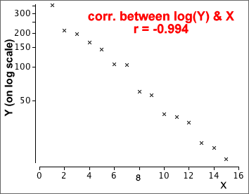
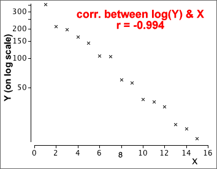
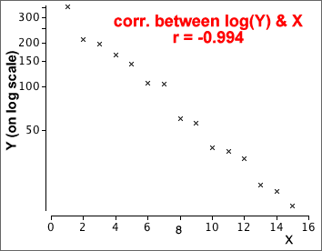

Correlation coefficient and nonlinear relationships
The correlation coefficient, r, is a good description of the strength of linear relationship but not nonlinear ones. If a scatterplot shows marked curvature, the correlation coefficient can considerably understate the strength of the relationship.
Transform the variables to linearise the relationship
Nonlinear transformations of X and Y alters the shape of the relationship. It is often possible to linearise a relationship by transforming one or both variables.
The strength of a nonlinear relationship can therefore be described with the correlation coefficient after a transformation to one or both variables has been applied to remove the nonlinearity.
